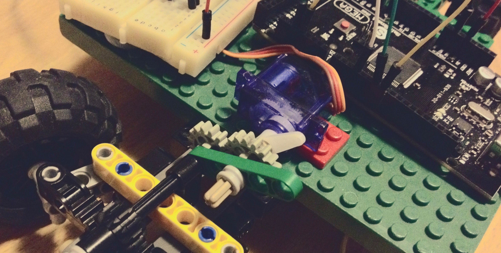
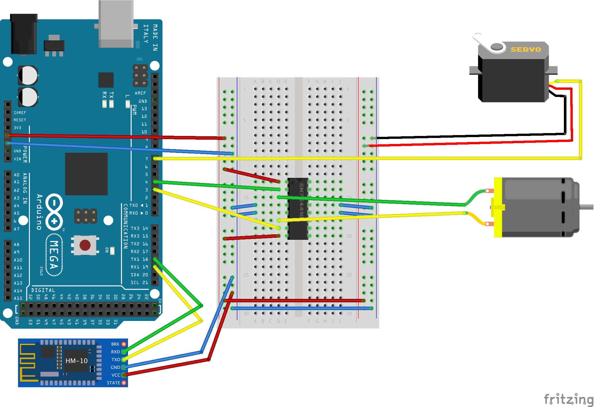
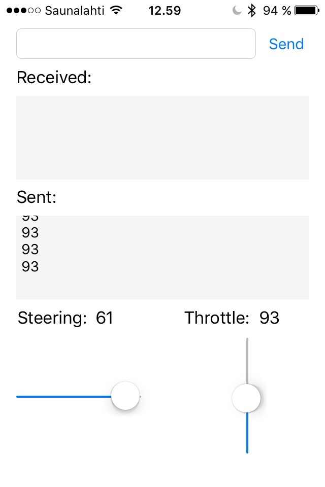

Remote controlled car

I made this project during christmas break from school. The goal was to test my Arduino components, try something new with iOS and build something amazing.
You can get all the code and Fritzing scetch from the git repository.
Used Components
- Arduino Mega 2560
- HM-10 Bluetooth LE chip
- DC motor
- Servo motor
- Small breakout board
- H-bridge SN754410
I used some old Legos to build the car’s frame. I also used Lego DC motor. I hot glued my servo on a lego brick to get it on my car.
Wiring
I connected my BLE module to Arduino Mega’s Serial1 (RX1 19, TX1 18) pins.
Note that BLE’s RX goes to Arduino’s TX and vice versa.
I was feeling lazy and my motors were small, so I took the power for motors straight from Arduino’s 5 V pin. For serious implementation, one should get external power for H-bridge.

Protocol design
I used serial communication between Arduino and iPhone.
After trying and erroring, I managed to figure out how to send an 8-bit integer from iOS to Arduino.
In order to simplify the Arduino code, I used those 8 bits for all my purposes.
Unsigned 8 bit integer can hold numbers between 0 and 127.
I reserved the first half (0 - 63) for steering.
The other half (64-127) was reserved for throttling.
So, when Arduino received an number, I figured out if it was steering or throttling command and continued according to that.
Arduino
I used Arduino’s servo library for controlling the servo.
I also used Arduino’s analogWrite()-function to set motor speed.
The code is simple and self-explanatory.
My loop() was simple:
|
|
Steering command even simpler. I used map() to scale the incoming value to my steering angle.
|
|
And then setThrottle():
|
|
iOS
First, I created the app’s layout. I put sliders for steering and throttling.
I set the sliders so that they keep in the limits: 0-63 for steering and 64-127 for throttling. See the screenshot below.

I only have one Storyboard and one ViewController.
So, my ViewController starts like this. note the importing of CoreBluetooth and adopting CBCentralManagerDelegate and CBPeripheralDelegate protocols.
I found out the UUID’s of my chip and hard coded them. As I have only one bluetooth chip, I don’t need to be able to choose the device.
|
|
Here is my throttle slider. I rotated the slider to be vertical.
Then I just send the slider value to the Arduino when it has changed.
Steering slider was handled just the same way.
|
|
In previous snippet, I used this writeInt() method.
It takes Swift’s Int as a parameter, converts it to Int8, creates a NSData object from it and finally sends it to the peripheral device (my Arduino).
|
|
The rest of the code is just copied from Apple’s sample.
All together
Here’s some proof that it actually worked! It’s beautiful, isn’t it?
The thick wire from arduino is USB power cable connected to power bank.